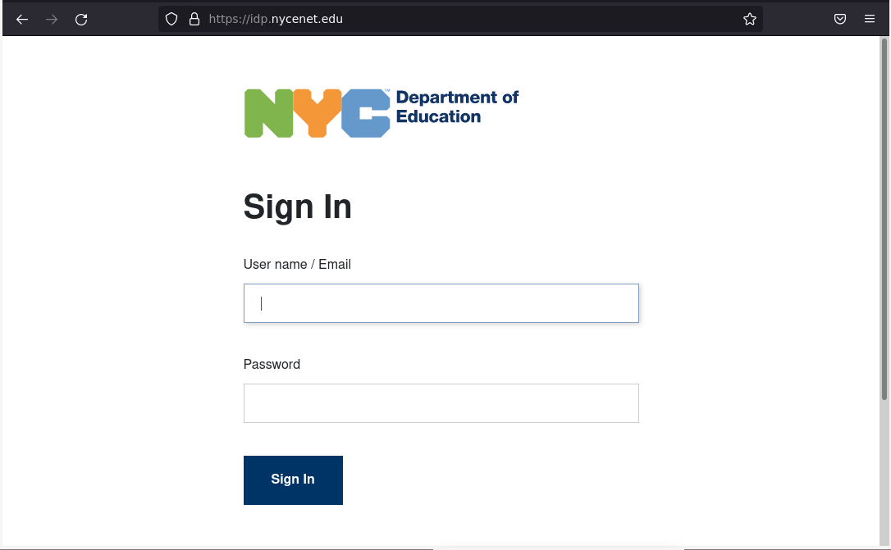

The Ideal World
Test 3
Perhaps in the future, a websites backend code would be encrypted and unreachabled by users, thus seemingly putting an end to clone phishing. But this test will prove that even if one can't simply copy/paste code, cloning websites is still fairly doable.
How it's Made
Although it may seem obvious, every website IS what the webpage displays. To the average user, if a website essentially looks the exact same to another, even if the backend code is different, the user will think it is the same website. It may seem tedious, but an exact copy of any website can be made by hand, as long as it is visible to the user. This can be done with any page on the world wide web, such as with the official DOE login below, which some viewers may be familiar with:

And that is what I have exactly done here. Without directly copying the websites code, I created a
clone of the DOE login website by hand. This took considerably longer than the first two tests.
It is a close and faithful copy yet hold them side by side
and the differences are obvious.
This test will showcase a somewhat exact clone of the DOE Login
Click the button below to start the test. Once in the test, you may return by
the button on the top.